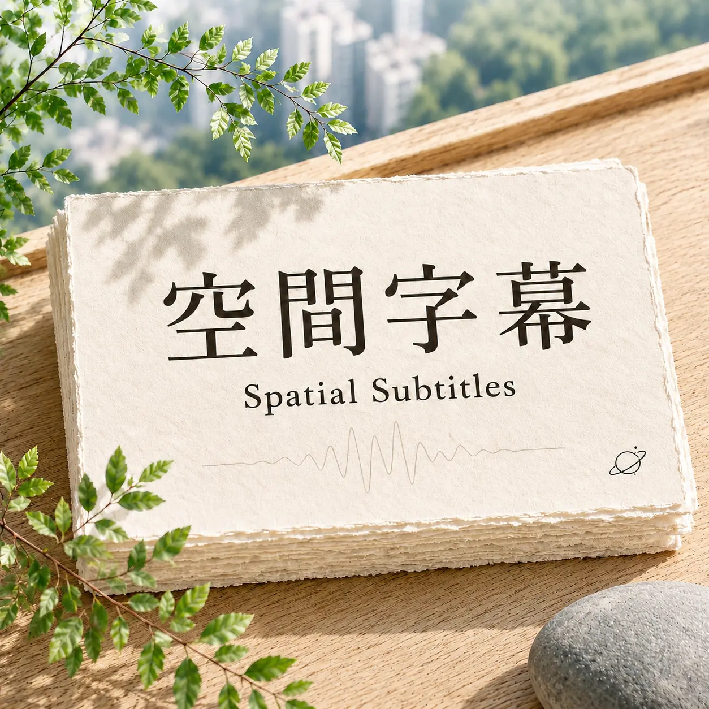

ABOUT THE CHANNEL
關於空間字幕
《空間字幕》是一個關於香港文化、影像與城市經驗的閱讀和聲音頻道。
我們習慣把空間當作故事的背景，但人物住在哪裡、走過哪條街、隔著哪一面玻璃觀看世界，往往早已參與了敘事。空間不只容納故事，也生產感受、記憶和人與城市之間的關係。
這裡不追逐熱點，也不以製造結論為目的。每次從一個場景、一個疑問開始，借助人文地理、文化研究與細讀的方法，把理論重新放回生活，像與朋友聊天一樣分享觀看所得。
有些故事寫在劇情裡，有些結構，藏在人物走過的空間裡。